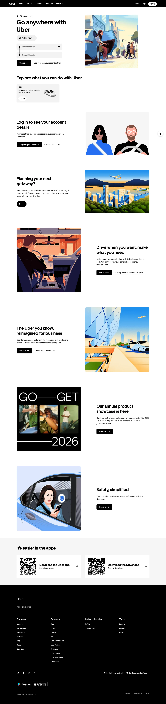

Uber 主题
Uber 的 Design.md 主题展示，围绕媒体内容、强视觉、能源运营、消费品牌组织页面。
Mobility platform. Bold black and white, tight type, urban energy.
媒体内容强视觉能源运营消费品牌电商零售品牌展示移动端内容货架趣味互动

来源
- 来源
- getdesign.md
- 镜像
- github:VoltAgent/awesome-design-md
- 网站
- https://uber.com/
- 详情
- https://getdesign.md/uber/design-md
色板
#000000: #000000#0000ee: #0000ee#5e5e5e: #5e5e5e#ffffff: #ffffff#afafaf: #afafaf#4b4b4b: #4b4b4b#efefef: #efefef#f3f3f3: #f3f3f3#e2e2e2: #e2e2e2#282828: #282828#a0a0a0: #a0a0a0#fbbf24: #fbbf24
字体
display: UberMovebody: UberMoveTextmono: ui-monospacehints: UberMove,UberMoveText,ui-monospace,Helvetica Neue,Geist,Inter,mono-kickers
圆角
control: 0pxcard: 16pxpreview: 36pxpill: 999pxsource: design-md
间距
xxs: 4pxxs: 6pxsm: 8pxmd: 12pxlg: 16pxxl: 20px2xl: 24px3xl: 32pxsource: design-md
使用建议
建议
- 建议：Reserve {colors.primary} ({#000000}) for every primary CTA pill. One black pill per visible viewport is the brand's whole conversion story。
- 建议：Use {rounded.pill} 999 px on every interactive element (buttons, chips, app pills). The pill IS the brand's geometric signature。
- 建议：Render cards in {rounded.xl} 16 px — promo cards, content cards, the ride-request form card, the annual-showcase card all share this radius。
- 建议：Set every headline in {typography.display-*} weight 700 in sentence-case. The display face never carries body copy。
- 建议：Use polarity-flipped black promo bands mid-page to break up white-on-white rhythm. The polarity shift IS the depth cue。
避免
- 避免：introduce a second brand accent colour (orange, blue, green). The brand's entire UI is black-and-white plus grayscale; new accents flatten the system。
- 避免：render the primary CTA as a {rounded.xl} rectangle except inside the larger ride-request flow (where {button-large-rounded} is the documented exception)。
- 避免：use all-caps display headlines. Sentence-case is the voice; uppercase is restricted to rare eyebrow tags。
- 避免：drop a soft drop-shadow on every card. The brand uses Level 0 flat as the default; shadow is reserved for the floating pill and the ride-request form。
- 避免：reduce the brand to its illustration system alone. The pill geometry + black/white duet carries the brand even without illustrations。
查看 DESIGN.md